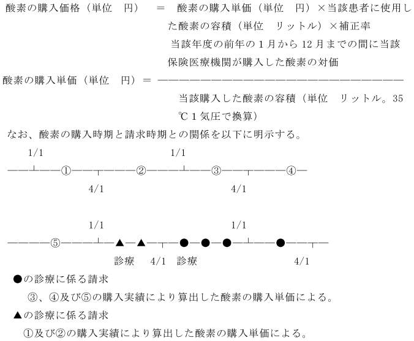

Ｊ２０１ 酸素加算
注
１ 区分番号Ｊ０２４からＪ０２８まで及びＪ０４５に掲げる処置に当たって酸素を使用した場合は、その価格を10円で除して得た点数（窒素を使用した場合は、その価格を10円で除して得た点数を合算した点数）を加算する。
２ 酸素及び窒素の価格は、別に厚生労働大臣が定める。
Ｊ２０１ 酸素加算
(１) 酸素吸入のほか酸素又は窒素を使用した診療に係る酸素又は窒素の価格は、「酸素及び窒素の価格」（平成２年厚生省告示第41号）により定められており、その単価（単位 リットル。摂氏35度、１気圧における容積とする。）は、次のとおりである。
ア 離島等以外の地域に所在する保険医療機関の場合 液体酸素の単価
定置式液化酸素貯槽（ＣＥ）に係る酸素の単価 １リットル当たり0.19円
可搬式液化酸素容器（ＬＧＣ）に係る酸素の単価 １リットル当たり0.31円
酸素ボンベに係る酸素の単価
大型ボンベに係る酸素の単価 １リットル当たり0.41円
小型ボンベに係る酸素の単価 １リットル当たり2.31円
イ 離島等に所在する保険医療機関の場合 液体酸素の単価
定置式液化酸素貯槽（ＣＥ）に係る酸素の単価 １リットル当たり0.28円
可搬式液化酸素容器（ＬＧＣ）に係る酸素の単価 １リットル当たり0.46円
酸素ボンベに係る酸素の単価
大型ボンベに係る酸素の単価 １リットル当たり0.62円
小型ボンベに係る酸素の単価 １リットル当たり3.09円
(２) 離島等とは、以下の地域をいう。
ア 離島振興法（昭和28年法律第72号）第２条第１項の規定により離島振興対策実施地域として指定された離島の地域
イ 奄美群島振興開発特別措置法（昭和29年法律第189号）第１条に規定する奄美群島の地域
ウ 小笠原諸島振興開発特別措置法（昭和44年法律第79号）第４条第１項に規定する小笠原諸島の地域
エ 沖縄振興特別措置法（平成14年法律第14号）第３条第三号に規定する離島
オ 過疎地域自立促進特別措置法（平成12年法律第15号）第２条第１項に規定する過疎地域
カ 豪雪地帯対策特別措置法（昭和37年法律第73号）第２条第２項の規定により特別豪雪地帯として指定された地域
(３) 定置式液化酸素貯槽（ＣＥ）とは、医療機関の敷地内に設置されており、通常気体酸素容量が200万Ｌから1,500万Ｌまでのものをいい、可搬式液化酸素容器（ＬＧＣ）とは、気体酸素容量が13.3万Ｌ又は37.6万Ｌのものをいい、大型ボンベとは、ボンベ１本当たり通常7,000Ｌ又は6,000Ｌ用のボンベをいい3,000Lを超えるもの、小型ボンベとは、ボンベ１本当たり通常1,500Ｌ又は500Ｌ用のボンベをいい3,000L以下のものをいう。
(４) 酸素の価格については、次の算式により算出した値の１円未満を四捨五入して得た額とする。
酸素の価格（単位 円） ＝ 酸素の単価（単位 円）× 当該患者に使用 した酸素の容積（単位 リットル）× 補正率
(５) (１)の規定にかかわらず、(１)に規定する区分ごとに次の算式により、保険医療機関ごとに算出される酸素の購入単価が(１)に規定する単価に満たない場合には、４月１日から３月31日までの１年間の診療については、この酸素の購入単価を用いて算出した酸素の購入価格によって請求するものとする。

(６) (４)及び(５)の算式の場合において、「当該患者に使用した酸素の容積」とは、患者に使用する際の状態の温度及び気圧において測定された酸素の容積をいうものであり、一定の温度又は気圧に換算する必要はない。 また、補正率1.3は、購入時と使用時の気体の状態の違いに由来する容積差等を勘案の上設定したものである。
(７) 新規に保険医療機関の指定を受けた場合及び(１)に規定する区分を追加又は変更した場合であって、当該診療に係る年度の前年の１月から12月までの１年間において酸素の購入実績がない場合にあっては、当年度の３月までの間は、次に定めるところによって酸素の購入単価を算出するものとする。その場合において購入単価が(１)に規定する単価を超える場合は、(１)の購入単価とする。
ア 当該診療月前に酸素を購入した実績がある場合（当該年度内に新規に指定され購入又は区分の追加若しくは変更（大型ボンベを廃止し、ＣＥに変更等）を行った場合に限る。）にあっては、購入した酸素（保険医療機関の指定を受けた日前に購入したものを含む。）の対価を当該購入した酸素の摂氏35度、１気圧における容積（単位 リットル）で除して得た額の0.01円未満の端数を四捨五入した額を酸素の購入単価とする。
イ アにより算出した場合の購入単価について、当年度の３月までの間については、当該診療月前に購入した全ての酸素（保険医療機関の指定を受けた日前に購入したものを含む。）の対価を当該購入した酸素の摂氏35度、１気圧における容積（単位 リットル）で除して得た額の0.01円未満の端数を四捨五入した額を酸素の購入単価とする。
(８) (５)並びに(７)のア及びイの関係は、当該年度（診療日の属する年度）に係る購入単価は、原則、前年の１月から12月までの購入実績に基づき算出した単価とするものであるが、年度の途中において新規又は区分の変更を行った年度に限り当該年度内の購入実績に基づき購入単価とするものである。従って、翌年度の４月１日からは、(５)により算出した購入単価によることとなる。
(９) 離島等における特別の事情とは、酸素の搬入において船舶による搬入時間が、多くの時間を要する場合や酸素製造工場又は医療用酸素充填所から著しく遠距離であるため通常の価格では購入が困難な場合等を考慮したものであり、当該事情があると認められた場合には、(１)の規定にかかわらず、(１)に規定する区分ごとに(５)に規定する算式により、保険医療機関ごとに算出される酸素の購入単価が(１)に規定する単価を超える場合は、４月１日から３月31日までの１年間の診療については、この酸素の購入単価を用いて算出した酸素の購入価格によって請求するものとする。なお、この場合、前年度の購入単価を超えることはできないものとする。ただし、大型ボンベにあっては、6,000L以上、小型ボンベにあっては、500L以上に限る。
(10) 離島等における特別の事情がある場合は、その理由を記載した書面を地方厚生（支）局長に届け出るものとする。
(11) 保険医療機関は、当該年の４月１日以降の診療に係る費用の請求に当たって用いる酸素の単価並びにその算出の基礎となった前年の１月から12月までの間に当該保険医療機関が購入した酸素の対価及び当該購入した酸素の容積を別紙様式25により、当該年の２月15日までに地方厚生（支）局長に届け出るものとする。ただし、(７)のア又はイの方法によって酸素の購入単価を算出している場合にあっては、随時（当該年度内において算出した購入単価に30％を超える変動があった場合を含む。）地方厚生（支）局長に届け出るものとする。
(12) 地方厚生（支）局においては、届出を受けた購入単価について、審査支払機関に対し通知するとともに、保険者に対し通知し、情報提供を行うこと。
(13) 窒素の価格は、液化窒素、ボンベ等の窒素の形態にかかわらず、窒素の単価に当該患者に使用した窒素の容積を乗じた値とする。なお、窒素の単価は１リットル当たり0.12円である。
(14) 酸素を動力源とする閉鎖循環式麻酔装置、高気圧酸素治療装置等を利用して、人工呼吸、酸素吸入、高気圧酸素治療等を行った場合、動力源として消費される酸素の費用は算定できない。また、動力源として消費される窒素の費用も算定できない。
(15) 酸素と窒素を用いて空気と類似した組成の気体を作成し酸素吸入等に用いた場合、酸素及び窒素の費用は算定できない。
(16) (５)、(７)及び(11)に掲げる対価については、平成25年１月１日から平成26年３月31日までの間に医療機関が購入したものについては、当該対価に105分の108を乗じて得た額の１円未満の端数を四捨五入した額とする。